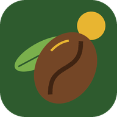

Café Arábica
Café Arábica
Variedades, cultivo, pragas e doenças
🔍
📲 Instalar
← Voltar
←
Para instalar:
no Chrome, toque no menu
⋮
(canto de cima) e depois em
Instalar app
ou
Adicionar à tela inicial
.
Entendi